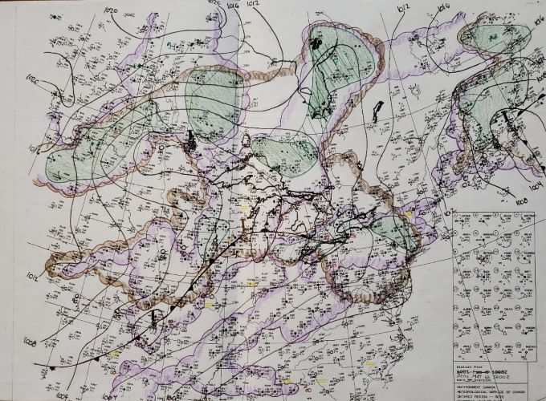
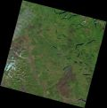
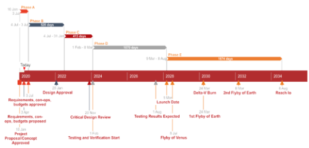

Above image was sourced from CIRA/NOAA website and is used for our weather tracking and prediciton services.
At ARTL, our Earth & Space department has worked on a wide range of different projects. Some of our best, and favorite projects are outlined below.
Weather monitoring & prediction
Our meteorology experts have helped many companies for their weather monitoring and prediction needs. Our experts have a deep understanding of all the different components that go into forecasting and are able to tailor it to your needs.
For a day-to-day basis, we use in-house meteorologists to help forecast the weather for the next day. Using a variety of satellite imagery, temperature profiles from nearby stations, moisture and vorticity analysis, they can create a comprehensive nephanalysis for you.
For long term forecasting, we use numerical weather prediction to give a good sense of what to expect. This helps us take into account the changing climate which impacts our clients. The models we use focus on different variables to get a good idea of different scenarios that you can prepare for. This is helpful especially for farmers installing tiling and determining how large the tiles need to be for future changes in weather.
Satellite Imagery Analysis
Forest fire area regrowth & monitoring
In early 2019, one of our clients requested the monitoring of areas that had recently been hit by forest fires in BC, 2017. We used satellite imagery immediately following the fires in August 2017, and used imagery a year later in 2018. Using PCI Geomatica, we were able to classify the satellite imagery from 2017 and find all the areas that had been hit by fire. We also looked at the NDVI mapping to really see the areas where the fire was. Running the same analysis on the imagery from 2018, we could then perform a change analysis to observe regrowth in the areas hit by the forest fires. We were able to see this growth just from the classification changes, but regrowth was most clearly seen in the NDVI change analysis.
With this our client was able to monitor the burned areas, and with more years of satellite imagery the regrowth can be constantly monitored.
2019 Transit Extension Crowdsource and Social Awareness

For this project, driver statistics were the primary focus. By observing high traffic volume and high GO ridership, 5 areas of interest were selected to check the suitablity for a GO transit extension. Drivers with a commute over 60 minutes were given the greatest consideration. Suitability(%) = .25*AADT16+.2*CoC+.2*Co45+.3*Co60+.05*GOr, where AADT16 is the Annual Average Daily Traffic counts for 2016, CoC is the commute outside the census division, Co45, a commute over 45 minute, and Co60 is commute over 60 minutes, all collected from the 2016 census. Finally, GOr, is the GO ridership data.
Using the data available, a web map was produced, found here. Looking at the results, Bowmanville, Uxbidge, and Orangeville all have fairly similar suitability. Next time, more complete results may be generated by placing more focus on these 3 towns and adding more suitability conditions, such as traffic farther into the commute of those commuting for >60 minutes, or adding collision or truck traffic.
Given the most suitable areas, it can be seen that there is thought of where GO transit should expand. While this analysis has given suitable locations to review, it is good to note that there are other factors that play into the suitability. Orangeville, Bowmanville, Uxbridge, Port Perry and Orillia all have good reasons for a GO line extension into their areas. Metrolix has plans of extension and they will continue to accommodate the commuter rush, especially focusing on trains in and out of the GTA. Incorperating crowdsourcing into the data helps take into consideration the commuters ideal trip.
Io Geothermal Orbital Observation Satellite (IGOOS)
In September 2019, our department started on a space mission design. This has been one of our longest and most intense projects. Our client came to use with the desire to send a science mission to Io, on of Jupiter’s Galilean moons. With the client we worked out a mission overview: really nailing down the need, objectives, architecture, and operation concepts. With all these in place we set forth a preliminary mission schedule, outlining the different phases. Right now we are in Phase C, and are working on the critical design review (CDR), started on Nov 20, 2023, with the team and client. After this review the testing and verification can start in late January.
About the Mission
Jupiter is a dynamic place, and though many satellites have already observed Jupiter and its surrounding moons, even more in depth observations can be done. This is what IGOOS aims to accomplish. By taking detailed observations of Io - as well as Jupiter's magnetic and gravitational fields that extend to Io’s orbit - these physical processes can be analyzed. This analysis can help further our understanding of the effect that Jupiter has on its moons, and the dynamics that go on around Jupiter in its orbit around the sun. Since volcanoes are so well studied on Earth, that background information and software can be applied to Io’s volcanic activity to help aid in the analysis.
The primary objective for the IGOOS mission is for the collection of scientific data from Io to observe its volcanic activity. This data will be analyzed by a neural network on board for areas of volcanic interest. This analysis as well as observation data will also be transmitted back to Earth for scientist stakeholders to then create a model of tidal forces and a map of volcanic activity.
The secondary objectives are to investigate the effect of Jupiter's magnetic and gravitational field on Io. This will help with understanding the processes that are occurring on Io and around Jupiter.
Specific instrumentation used in this mission are Visible and Infrared Mapping Spectrometer (VIMS), Synthetic Aperture Radar Imager (SAR), Electrostatic Gravity Gradiometer (GRAV), and Dual Technique Magnetometer (MAG) measurements. IR data is used to quantify heat radiation and ash clouds. Synthetic Aperture Radar (SAR) is used for quantifying surface deformation and detecting areas of potential lava flow. The gravity and magnetic data will primarily be investigating the effects of Jupiter on Io, however, there is research that gravity and magnetic changes can be seen due to the changes in subsurface mass in active volcanoes.
A brief look into the scientific instrumentation
In the study that was completed, the mission science was the focus. Multiple data types were evaluated to determine what type of data would be collected by the scientific payload. The main objective of the IGOOS mission science payload is to obtain locations and observations of volcanic activity on the Galilean moon, Io. Secondary objectives are to determine the forces acting behind the located volcanic activity.
Data maps are the best way to solve this problem, to locate volcanic activity on Io from a remote sensing perspective without ground measurements. Due to the beginning stage of the design process and theoretical nature of the problem, cost was assumed negligible due to the range of possible solutions. The solution data was to have at least one high resolution data type, preferably from the electromagnetic (EM) spectrum. This constraint was since it is easier to visually see and confirm processes occurring on a surface rather than detecting magnetic fields and needing to assume that it is volcanic activity without confirmation. In addition, due to the deep space nature of the IGOOS mission, it would be best to have the data collected with med-low power instrumentation.
Around Earth, there are many different instrumentations that have been previously sent into orbit for observations, are currently in a mission, or are planned for a future mission. Each solution already has instrumentation that is on an active or planned satellite mission. Instrument selection was based on how closely it then fulfilled the mission goal for the specific alternative. The reasoning behind a current or future mission instrumentation is so that the technology would be compatible and relevant in a future building and launch date.
After outlining different variables for success, we were able to set up various weighting and criterion tables for each proposed science instrumentation. Then, after completing the analysis of different data types, the main goals of the instrument, their specifications, and the final decision matrices were filled out and evaluated. The best recommended alternative to fit the mission needs were EM data, and more specifically the IR and MW data alternatives which fulfilled the high-resolution selection criteria. With data fusion techniques, the image data can be combined to create a high-resolution image containing the data that is needed.
There were many significant trade studies that came out of this, the most interesting one was looking at a riskier option, and looking into having a neural network or automated detection system aboard the satellite that could determine and monitor volcanic activity based on the received data and make data maps to send back to the scientists for research. This would limit the need for scientists to send pointing instructions to the satellite for closer observations.
You can read the full version here.